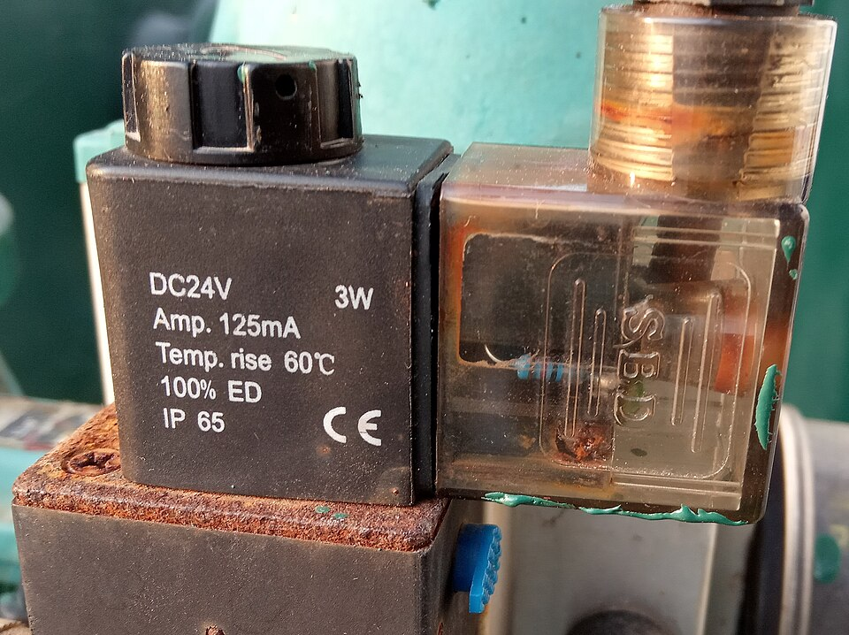
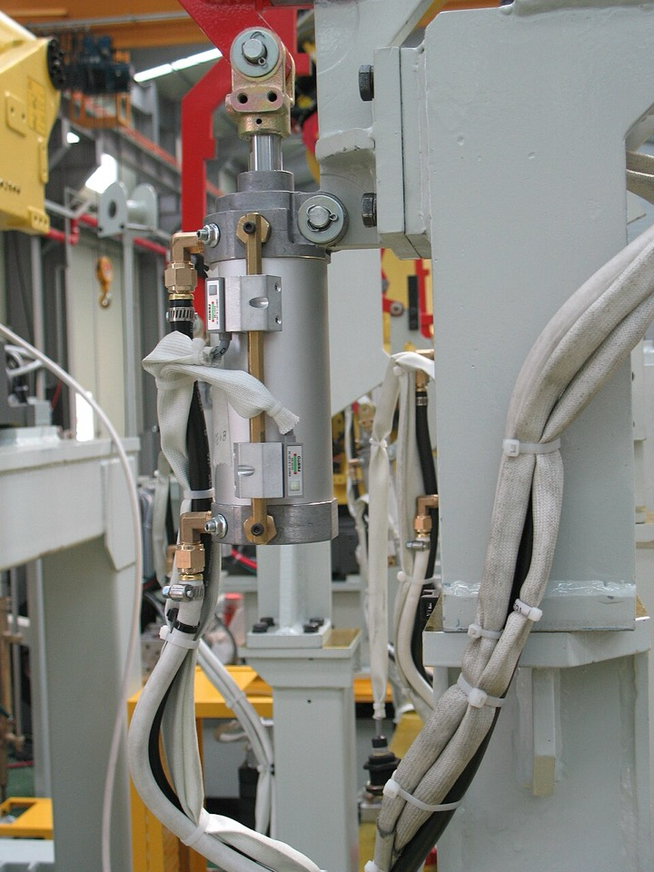
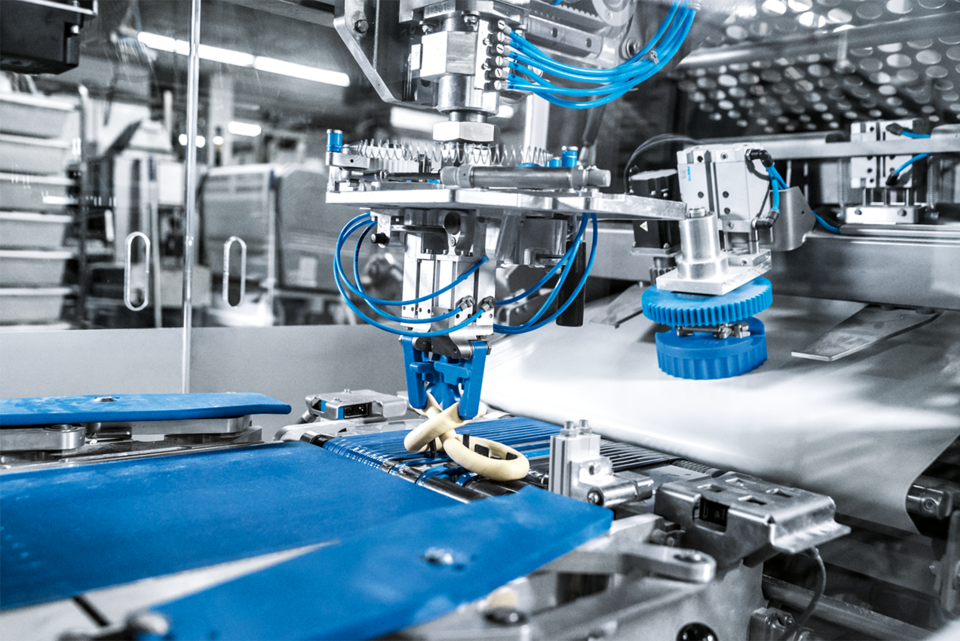

Diagnose a pneumatic actuator from command to position
The controls screen says Extend. The cylinder has not reached the confirming switch. Follow the chain through the electrical command, valve, air path and moving mechanism.
The printed or browser PLC trainer from P39 plus a paper schematic for the simulation. Physical observation on a purpose-built, guarded training rig under an instructor can follow the paper exercise.
Find the valve coil, air paths and cylinder
An electrical output energises the coil. A directional valve changes which cylinder chamber receives air and which can exhaust. A double-acting cylinder has a powered stroke in both directions. An independent switch or sensor reports position. A coil LED, if fitted, shows a local electrical condition. It cannot establish pressure or movement.

Photo by Sarah Adrita, scaled for the course. Original photo · CC BY-SA 4.0.


Photo by Mixabest, scaled for the course. Original photo · CC BY-SA 3.0.

Study the relevant valve symbol on the vendor drawing. For the exercise assume a single-coil, spring-return 5/2 valve with one supply, two work ports and two exhaust ports, and a separate extended sensor. The resting and energised air paths are defined by that valve’s two positions.
Simulate the command and prove the return state
In the P39 browser trainer, call the output EXTEND_CMD and the proof checkbox EXTENDED. Keep the permissive checks. Press Start once, then change the proof after one simulated second. Write whether the command stays on. Remove a permissive and observe that the command drops. Now apply a missing proof and prove that the timeout latches. On paper add a separate RETRACTED input and record how you would confirm that the actuator returned.
| Observed state | Next boundary to check |
|---|---|
| Controller output off with a permissive missing | Logic, interlocks or sensor input |
| Output commands extend while the coil indication remains off | Electrical wiring, coil supply or output module |
| Coil indication on while the actuator stays stopped | Air supply, valve state, blocked exhaust or mechanical binding |
| Cylinder visibly moved and feedback remains off | Sensor position, cable, input mapping or signal timing |
| Command dropped and the retracted switch has no proof | Use isolation and inspect return movement and its sensor |
Watch on YouTube · Watch the two air paths change as the cylinder reverses. The demonstration is in Portuguese and shows the sequence visually. Retorno Automático de um Cilindro de Dupla Ação (Ensaio 19) · UP Educação Profissional.
English demonstration · Pause while the valve switches and identify which limit valve reports the end of the stroke. 5/2 valve, double-acting cylinder and limit valves · Bob Teaches Tech.

Photo by Festo (Unternehmen), scaled for the course. Original photo · CC BY-SA 4.0.

When the cylinder moves slowly only under demand, learn to compare pneumatic pressure at two points while air is flowing.
Keep stored energy in the troubleshooting plan
A blocked mechanism, a compressed chamber, an accumulator or a hanging load can move after an electrical output drops. Keep the learner exercise simulated. On training hardware use the site or instructor procedure to isolate all energy sources and verify the apparatus is safe before touching a mechanical or pneumatic part. The simulator does not test physical isolation or stopping performance.
Provide a state table for idle, extending, confirmed and timed out, plus a suspected-fault boundary and test result. Look at how the equipment vendor introduces pneumatics from symbols and connections through troubleshooting. Festo Didactic electro-pneumatics training.
T34 · Control signals, PLC scans and independent proof
T42 · Pneumatic force, directional valves and independent feedback